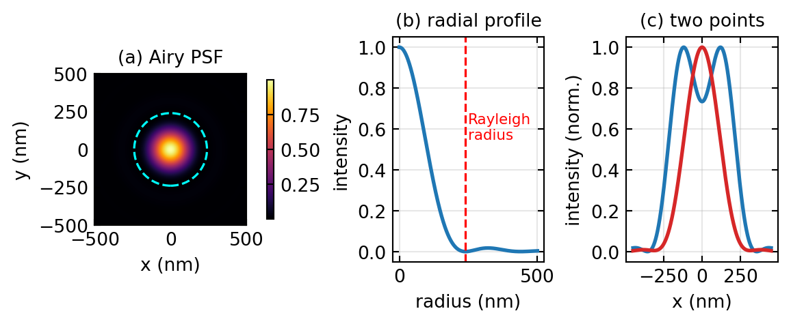
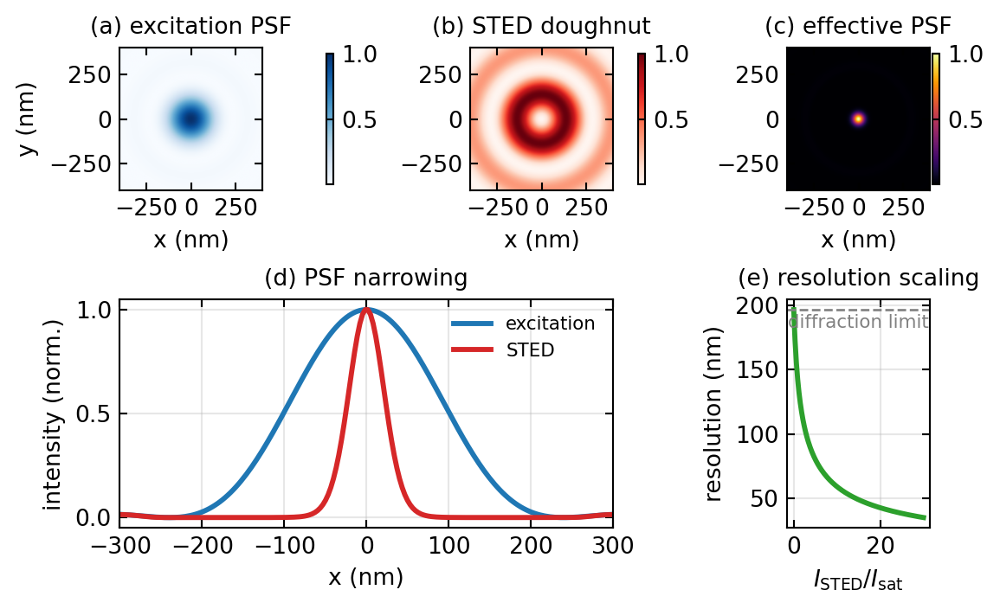
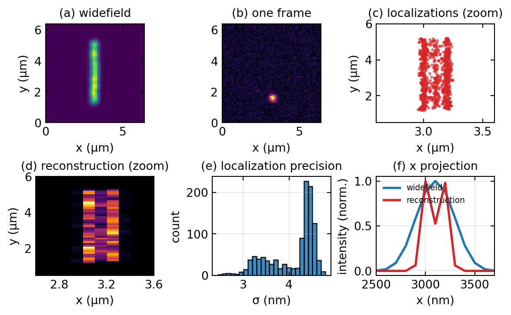
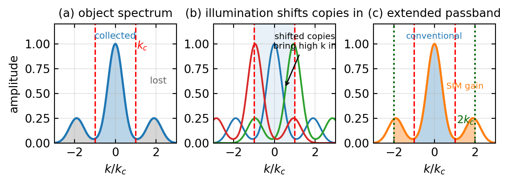
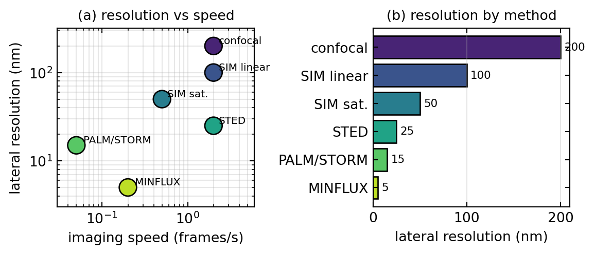

Superresolution Microscopy
Overview
Superresolution microscopy is the collective name for a set of far-field optical methods that see detail finer than the classical diffraction limit of about 200 nm, while still using ordinary lenses and visible light. The achievement was recognised with the 2014 Nobel Prize in Chemistry. In this lecture we ask first why the diffraction limit exists, and then how four families of techniques get past it: stimulated emission depletion (STED), single-molecule localization microscopy (SMLM, including PALM and STORM), structured illumination microscopy (SIM), and MINFLUX. The thread running through all of them is the same idea you have met repeatedly in this course, that contrast and resolution are set by what happens in the pupil and in spatial-frequency space, together with one new ingredient: a nonlinear response of the fluorophore that lets us reach frequencies the lens alone cannot collect.
The Diffraction Limit
In a fluorescence microscope each emitter is imaged not as a point but as the point-spread function (PSF) of the objective, the blur produced by diffraction at the finite lens aperture. For a circular aperture of numerical aperture \(\text{NA}\) illuminated at wavelength \(\lambda\), the focal intensity is the Airy pattern
\[I(r) = I_0 \left[ \frac{2 J_1(u)}{u} \right]^2, \qquad u = \frac{2\pi\,\text{NA}}{\lambda}\,r,\]
with \(J_1\) the first-order Bessel function. Two emitters closer than the width of this blur merge into one, and that width is what we call the resolution. The Abbe criterion, derived directly from diffraction theory, places the limit at \(d_{\text{Abbe}} = \lambda/(2\,\text{NA})\), which for green light at \(\lambda \approx 500\) nm and an oil objective of \(\text{NA} = 1.4\) gives about 180 nm. The closely related Rayleigh criterion, which calls two points just resolved when the peak of one Airy disk falls on the first zero of the other, gives \(d_{\text{Rayleigh}} = 0.61\,\lambda/\text{NA}\), about 240 nm in the visible.
The physical root of the limit is that an objective collects only those plane-wave components whose transverse spatial frequency is below the cutoff \(k_{\max} = 2\pi\,\text{NA}/\lambda\). Higher spatial frequencies, which carry the fine detail, leave the sample as evanescent waves that decay within a fraction of a wavelength and never reach the far field. Shorter wavelengths push the cutoff out, but ultraviolet and shorter light brings photodamage and demanding optics, so for live biological imaging the practical lateral resolution sits near 200 nm and the axial resolution, worse by roughly a factor of two and a half, near 500 nm. Since many protein assemblies measure 10 to 50 nm and synaptic structures 50 to 200 nm, a great deal of cell biology lives below this barrier, which is what motivated the search for ways around it. Figure 1 shows the Airy PSF and the two-point resolution test that defines the Rayleigh limit.
Breaking the Limit with Nonlinearity
There are two ways to reach beyond the cutoff. Near-field methods such as scanning near-field optical microscopy place a probe within a wavelength of the sample and pick up the evanescent waves directly; they reach sub-wavelength resolution but only at the surface and only by slow scanning, so they are little used for cell biology. The far-field methods that are the subject of this lecture keep a conventional objective and instead change the way the fluorophore responds to light. They are faster, reach deeper into the sample, and build on standard fluorescence microscopes, which is why they have become the workhorses of the field.
What every far-field method shares is a deliberate departure from a linear response. In ordinary fluorescence the emitted intensity is proportional to the excitation intensity, and a linear system cannot create spatial frequencies that the lens does not already pass. The trick is to drive the fluorophore into a regime where its response is no longer proportional, for example by saturating it, by switching it between a bright and a dark state, or by depleting it with a second beam. A schematic way to write this is
\[F(I) = \frac{\sigma\, I^{\,n}}{1 + (I/I_{\text{sat}})^{m}},\]
where the response bends over above a saturation intensity \(I_{\text{sat}}\). That nonlinearity lets us confine emission to a region much smaller than the diffraction-limited spot, or separate emitters in time so that they never overlap, and either route recovers information that the diffraction limit would otherwise hide. The methods below differ mainly in how they engineer the nonlinearity.
STED: Stimulated Emission Depletion
STED, invented by Stefan Hell, sharpens the effective PSF directly during scanning. A normal excitation pulse first raises fluorophores in a diffraction-limited spot to the excited state. Immediately afterward a second, longer-wavelength pulse, shaped into a doughnut with a dark centre and a bright ring, floods the same region. Where this depletion beam is bright it forces the molecules back to the ground state by stimulated emission before they can fluoresce spontaneously, so only the molecules sitting in the central dark notch are still allowed to emit. As the depletion power rises, that notch shrinks well below the diffraction limit, and because the microscope still scans point by point, the image is formed directly with no reconstruction needed.
Quantitatively, the fraction of molecules that survive to fluoresce falls exponentially with the local depletion intensity, \(P_{\text{on}} \propto \exp(-I_{\text{STED}}/I_{\text{sat}})\), and near the centre of a doughnut the intensity rises quadratically with radius. The effective PSF is the product of the excitation PSF and this survival probability, which is a sharply narrowed peak. Its width, and therefore the resolution, follows
\[d_{\text{STED}} = \frac{\lambda}{2\,\text{NA}}\,\frac{1}{\sqrt{1 + I_{\text{STED}}/I_{\text{sat}}}}.\]
The key feature is that the resolution improves without bound as the depletion intensity increases, in principle, so values below 50 nm are routine. In spatial-frequency language, narrowing the PSF widens the transfer function, so STED restores frequencies that lie beyond the conventional cutoff. The cost is that the high depletion intensities stress the sample and require red-shifted, photostable dyes and a precise doughnut, which is usually made by passing the beam through a vortex phase plate that imprints a phase ramp \(e^{i\phi}\) and converts the Gaussian beam into a ring. Figure 2 shows the excitation spot, the depletion doughnut, the resulting narrowed PSF, and how the resolution scales with depletion power.

Single-Molecule Localization Microscopy
PALM and STORM take an entirely different route, trading time for resolution. Instead of sharpening the spot, they make sure that at any instant only a sparse, random subset of the fluorophores is emitting, so few enough that their diffraction-limited blurs do not overlap. Each isolated blur is then fitted with a model PSF to find its centre, and although the blur itself is 200 nm wide, the position of its centre can be pinned down far more precisely. Cycling the molecules on and off thousands of times and pooling all the fitted positions builds up an image whose sharpness is set by the localization precision rather than by the PSF width.
The reason localization beats the diffraction limit is photon statistics. Fitting the centre of a blur built from \(N\) detected photons averages out their scatter, and the Cramér-Rao bound gives a precision
\[\sigma_{\text{loc}} \approx \frac{\sigma_{\text{PSF}}}{\sqrt{N}},\]
so a 150 nm PSF recorded with a thousand photons localizes to a few nanometres. More photons, brighter dyes, and lower background all sharpen the result. The two common implementations differ only in how they achieve the sparse blinking. PALM uses photoactivatable fluorescent proteins that a weak ultraviolet pulse switches on a few at a time, whereas STORM uses organic dyes such as Alexa 647 that cycle between bright and dark states under the imaging light, which makes labelling easier and is why STORM became popular. In both cases the final resolution lands in the 10 to 30 nm range.
Conceptually, SMLM does not extend the transfer function at all. It sidesteps the diffraction limit by never asking two molecules to be distinguished optically at the same time. The resolution is the precision with which single emitters are placed, a computational quantity governed by photon number, not an optical bandwidth. Figure 3 runs a small simulation of the whole sequence, from sparse blinking frames to the reconstructed image.

Structured Illumination Microscopy
Structured illumination doubles the resolution by an idea you already know from the Fourier optics lectures: the moiré effect. Instead of uniform light the sample is illuminated with a fine sinusoidal fringe pattern, \(I_{\text{illum}}(x) = I_0[1 + \alpha\cos(k_{\text{ill}}x + \phi)]\), whose period is as small as the objective can produce, near the diffraction limit itself. Multiplying the unknown object by this pattern in real space is a convolution in frequency space, and a sinusoid is a pair of delta functions at \(\pm k_{\text{ill}}\), so the measured spectrum becomes
\[\tilde I(\mathbf k) = \tilde O(\mathbf k) + \tfrac{\alpha}{2}\,\tilde O(\mathbf k - \mathbf k_{\text{ill}}) + \tfrac{\alpha}{2}\,\tilde O(\mathbf k + \mathbf k_{\text{ill}}).\]
The illumination has shifted two copies of the object spectrum by \(\pm k_{\text{ill}}\). High object frequencies that normally fall outside the cutoff are now displaced inward, where the objective can collect them, disguised as the slow moiré beating between sample and pattern. To untangle the three overlapping terms one records several images with the fringe pattern stepped in phase, typically three phases, and then rotates the pattern to a few orientations, typically three to five, so that the gain is obtained in every direction; a full two-dimensional data set is about nine to fifteen raw frames. After computational separation and repositioning of the shifted copies, the recovered passband reaches twice the conventional cutoff,
\[d_{\text{SIM}} = \frac{\lambda}{2(2\,\text{NA})} = \frac{d_{\text{Abbe}}}{2},\]
about 100 nm in the visible. Figure 4 shows the frequency-space picture, where the doubling of the passband is the whole story.
A further gain comes from running the fluorophore into saturation, which is again a nonlinearity. A saturated response distorts the pure sinusoid into a pattern containing higher harmonics at \(2k_{\text{ill}}\), \(3k_{\text{ill}}\), and so on, and each harmonic shifts the object spectrum even farther inward. Saturated SIM therefore reaches well below 100 nm, at the price of the higher intensities and photon budget that saturation demands. In its linear form SIM remains attractive because it uses ordinary dyes, works in widefield so it is fast, and is gentle enough for live cells; its main limitations are the need for careful calibration of the pattern and for good signal, since reconstruction artefacts appear when either is lacking, and the resolution gain, a clean factor of two, is more modest than STED or SMLM deliver.

MINFLUX
MINFLUX, also from the Hell group, combines the best of localization and beam shaping and reaches the highest precision of all. Rather than collecting many photons from a fluorophore sitting in a bright spot, it interrogates a single molecule with an excitation doughnut whose intensity is zero at the centre. When the dark centre is placed exactly on the molecule, almost no fluorescence is emitted; when it is slightly off, the molecule sits on the steep bright flank and emits strongly. By stepping the doughnut to a few known positions around the molecule and comparing the photon counts, one finds the position of the fluorescence minimum, which is the position of the molecule, with remarkable precision. Because the information lives in the sharp spatial gradient of the doughnut rather than in the sheer number of photons, only about fifty to a hundred photons are needed to reach one to five nanometres, where SMLM would need an order of magnitude more.
The same principle extends to three dimensions by adding an axial modulation to the beam, and the photon thrift brings a double benefit, very low phototoxicity and long-lived molecules that can be followed over time, which makes MINFLUX uniquely suited to single-molecule dynamics in living cells. The price is that it scans rather than imaging in widefield, so it needs fast and accurate beam steering and a reliable model of the doughnut, and it maps small regions around known molecules rather than producing a wide field at once.
Comparing the Methods
The four families occupy different corners of a trade-off between resolution, speed, photon cost, and gentleness, summarized in Table 1 and visualized in Figure 5. STED and linear SIM are fast and live-cell friendly but offer the more modest resolution gains, a factor of two for SIM and down to a few tens of nanometres for STED. SMLM reaches the finest detail for fixed samples but is slow, since it needs thousands of frames. MINFLUX gives the best precision per photon and the lowest dose, bridging the gap, but works by scanning small regions. In practice the choice follows the sample and the question: SMLM for the highest resolution on fixed specimens with any dye, STED for fast live volumetric imaging at moderate resolution, SIM for gentle, modestly improved imaging on a near-conventional microscope, and MINFLUX for extreme precision and single-molecule tracking at minimal dose.
| Method | Lateral resolution | Live cell | Speed | Photons per molecule |
|---|---|---|---|---|
| Confocal (diffraction-limited) | ~200 nm | yes | fast | moderate |
| SIM (linear) | ~100 nm | yes | fast | moderate |
| SIM (saturated) | ~50 nm | limited | medium | high |
| STED | 20 to 50 nm | yes | fast | moderate to high |
| PALM / STORM | 10 to 30 nm | no | slow | ~1000 |
| MINFLUX | ~5 nm | limited | medium | 50 to 100 |

A practical note on the workflow that SMLM and MINFLUX share with all localization methods: the raw data is a long stack of sparse frames, each of which is searched for peaks, fitted for molecule positions and photon counts, and filtered to discard poorly localized events. Because acquisition takes minutes, the sample drifts by tens to hundreds of nanometres during the run, so the positions must be corrected afterward, either by tracking fixed fiducial beads or by cross-correlating the reconstruction over time. The final image is rendered by drawing each molecule as a small Gaussian whose width equals its localization precision, on a pixel grid several times finer than that precision so the resolution is not thrown away by undersampling.
Superresolution in Fourier Space
It is worth stepping back to see the four methods through the single lens of the transfer function, which ties this lecture to the rest of the course. The diffraction limit is the statement that the incoherent transfer function vanishes beyond \(k_{\max} = 2\,\text{NA}/\lambda\). STED and SIM both extend that passband: STED narrows the effective PSF, which is the same as widening the transfer function, while SIM shifts copies of the object spectrum inward so that the recovered passband reaches twice the cutoff, and saturation in either method adds harmonics that push the boundary farther still. SMLM and MINFLUX do not widen the passband at all; they step outside the transfer-function picture by separating emitters in time and reading their positions computationally, so their resolution is a localization precision set by photon number rather than an optical bandwidth.
| Technique | View in spatial-frequency space |
|---|---|
| Diffraction limit | transfer function cut off at \(2\,\text{NA}/\lambda\); higher frequencies are evanescent and lost |
| SIM | illumination shifts spectral copies by \(\pm k_{\text{ill}}\), extending the passband to about \(2\times\) the cutoff |
| STED | nonlinear depletion narrows the PSF, equivalent to a wider transfer function |
| PALM / STORM | bypasses the transfer function; resolution is the localization precision, \(\sigma \propto 1/\sqrt N\) |
| MINFLUX | encodes position in the doughnut gradient; nm precision from beam shaping, not bandwidth |
The unifying message is that every far-field superresolution method buys spatial information with a nonlinearity or a clever encoding, whether it widens the transfer function as STED and SIM do, or circumvents it altogether as SMLM and MINFLUX do.
Summary
The diffraction limit is not a law of nature but a consequence of the finite numerical aperture of the objective, and it can be beaten in the far field by making the fluorophore respond nonlinearly. STED sharpens the scanning spot by depleting its rim with a doughnut beam, SIM shifts high spatial frequencies into the passband with structured illumination, and PALM, STORM, and MINFLUX separate single molecules in time and localize them with a precision that improves as the square root of the photon count. These approaches trade resolution against speed, photon budget, and gentleness, so no single method is best for every problem. What they share is the lesson that resolution is ultimately about information: photons collected, frequencies recovered, and the cleverness with which optical hardware and computation are combined. The field continues to move toward routine ten-nanometre imaging in living cells, real-time three-dimensional volumes, and the integration of machine learning into fitting and reconstruction.
Experimental Connections
Superresolution microscopy is the cutting edge of modern optics, but its core ideas can be explored in a teaching lab.
Resolution limit verification. Image fluorescent beads of known diameter, for example 200 nm, 100 nm, and 40 nm, with a standard widefield microscope. Beads smaller than the diffraction limit all appear as the same blur, which demonstrates the resolution barrier directly, and fitting the blur width confirms the Abbe and Rayleigh values.
Single-molecule localization. Prepare a very dilute sample of fluorescent molecules on a coverslip, fewer than one per diffraction-limited area. Each molecule appears as an Airy disk; fitting a two-dimensional Gaussian to it locates the centre to a few nanometres and makes the precision formula \(\sigma \approx \sigma_{\text{PSF}}/\sqrt N\) tangible.
Blinking and photoactivation. Some fluorescent proteins, such as mEos or PA-GFP, switch on under weak ultraviolet light. Illuminating a densely labelled sample at low ultraviolet power turns molecules on sparsely and at random, which is the basis of PALM, and even without a full reconstruction the stochastic activation that makes sequential localization possible is clearly visible.
Structured illumination in one dimension. Project a one-dimensional sinusoidal pattern onto a fluorescent sample with a Ronchi ruling, record three phase-shifted images, and reconstruct. Comparing the Fourier transforms of the raw and reconstructed images shows the extended bandwidth directly.
STED concept demonstration. A full STED setup needs a pulsed depletion laser, but the underlying physics is accessible by co-illuminating a fluorescent cuvette with an excitation beam and a strong depletion beam and measuring how the fluorescence falls as the depletion power rises. That saturation curve is exactly what sets the STED resolution.
Further Reading
The following references are linked to the central Resources & Recommended Reading page.
- Schermelleh et al. (2019): “Super-resolution microscopy demystified,” a review covering STED, PALM/STORM, SIM, and MINFLUX.
- Balzarotti et al. (2017): the original MINFLUX paper from the Hell group.
- Novotny & Hecht (2012): Principles of Nano-Optics, an advanced treatment of resolution limits and single-molecule detection.
- Mertz (2019): Introduction to Optical Microscopy, with good chapters on SIM and resolution enhancement.
- Goodman, Ch. 7: wavefront modulation, relevant to the beam shaping behind STED and MINFLUX.
- Hell, S. W. (2007): “Far-field optical nanoscopy,” Science 316, 1153, the Nobel-lecture overview of breaking the diffraction limit.
Introduction to Photonics: Superresolution Microscopy